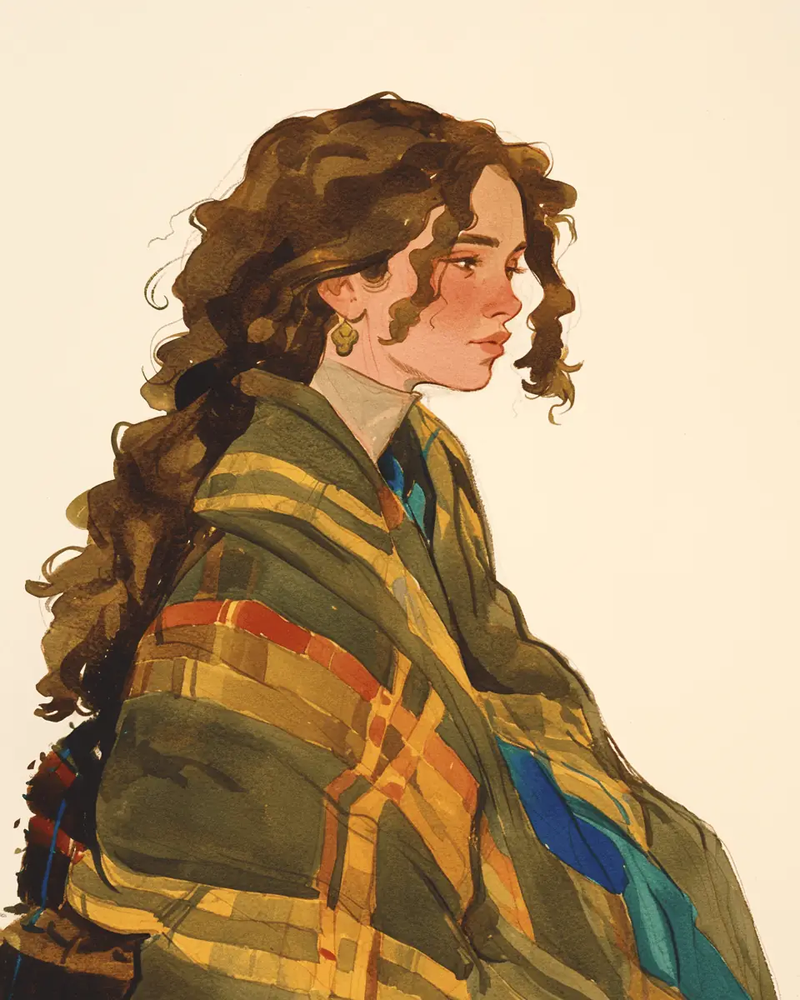

바다는 아직 어두웠어요.
[The sea was still dark.]
윤서는 담요를 어깨에 둘렀어요.
[Yunseo wrapped the blanket around her shoulders.]
초록색 격자무늬 담요였어요.
[It was a green tartan blanket.]
작년에도, 그 작년에도 같은 담요였어요.
[Last year, and the year before, it was the same blanket.]
“일찍 일어나셨네요.” 주인 아주머니가 웃었어요.
[You woke up early, the owner smiled.]
“네, 잠이 안 와서요.”
[Yes, I couldn’t sleep.]
겨울 바다에는 사람이 없었어요.
[The winter sea had no people.]
작은 항구에 배 두 척만 있었어요.
[Only two boats sat in the small harbor.]
윤서는 창밖을 한참 봤어요.
[Yunseo looked out the window for a long time.]
파도가 미동도 없이 밀려왔어요.
[The waves rolled in without the slightest stir.]
“매년 오시죠?” 아주머니가 물었어요.
[You come every year, right? the owner asked.]
“네, 벌써 십 년째예요.”
[Yes, it’s already the tenth year.]
“십 년이면 강산도 변한다는데, 여기는 그대로네요.”
[They say in ten years even the mountains and rivers change, but here everything stays the same.]
아주머니가 잠깐 윤서를 봤어요.
[The owner looked at Yunseo for a moment.]
그리고 아무 말도 하지 않았어요.
[And she said nothing.]
윤서는 커피를 두 잔 시켰어요.
[Yunseo ordered two cups of coffee.]
언제나처럼요.
[Like always.]
아주머니가 커피를 놓고 조용히 나갔어요.
[The owner set down the coffee and quietly left.]
탁자 위에 두 잔이 나란히 있었어요.
[On the table the two cups sat side by side.]
한 잔에서는 뜨거운 김이 올라왔어요.
[From one cup, hot steam rose.]
다른 한 잔은 천천히 식어 갔어요.
[The other slowly went cold.]
윤서는 식어 가는 잔을 가만히 봤어요.
[Yunseo quietly watched the cooling cup.]
“올해도 같이 왔네요, 여보.”
[We came together again this year, dear.]
대답은 없었어요.
[There was no answer.]
형언할 수 없는 고요함이 방을 채웠어요.
[An indescribable stillness filled the room.]
창밖에서 갈매기 한 마리가 울었어요.
[Outside the window, a single gull cried.]
윤서는 뜨거운 잔을 두 손으로 감쌌어요.
[Yunseo cupped the warm mug in both hands.]
그리고 처음으로, 식은 잔을 치웠어요.
[And for the first time, she cleared away the cold cup.]
“내년에는 한 잔만 시킬게요.”
[Next year I’ll order only one cup.]
바다가 조금씩 밝아 왔어요.
[The sea grew brighter, little by little.]